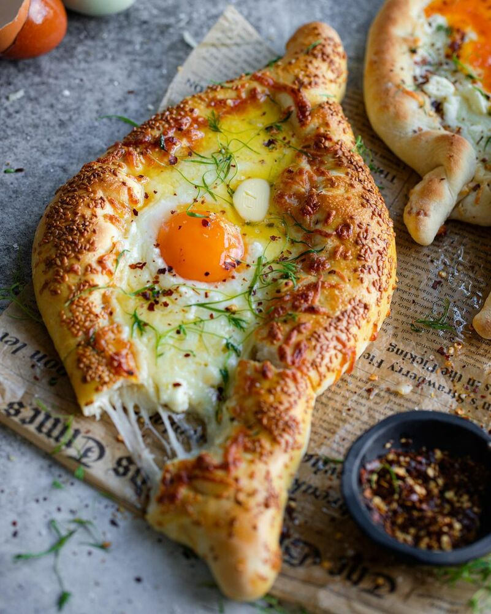

Home
Kaymak

About
Adjaran khachapuri is a traditional Georgian bread known for its distinctive boat shape and rich, savory filling. The dough is baked until golden, then filled with a blend of melted cheeses that bubble and brown in the oven. Just before serving, a raw egg and a pat of butter are placed in the center, where the residual heat gently cooks the egg, creating a creamy, indulgent dish meant to be mixed and eaten hot.
Ingredients
- 3 cups all-purpose flour
- 1 tsp salt
- 1 tsp sugar
- 1 tsp instant yeast
- 3/4 cup warm water or milk
- 2 tbsp olive oil
- 1 1/2 cups shredded mozzarella cheese
- 1/2 cup crumbled feta
- 2-3 eggs (one per khachapuri)
- Butter, for topping
Steps
- In a bowl, mix warm water (or milk), sugar, and yeast, and let it sit for a few minutes until foamy.
- Add flour, salt, and olive oil, then knead until a soft, elastic dough forms. Cover and let it rise for about 1 hour, until doubled in size.
- Preheat the oven to 450°F (230°C). Divide the dough into portions and roll each into an oval.
- Roll the edges inward on both sides and pinch the ends to form a boat shape.
- Mix the cheeses together and fill the center of each dough boat.
- Bake for 12–15 minutes, until the bread is golden and the cheese is melted.
- Remove from the oven, add an egg to the center of each khachapuri, and return to the oven for 2–3 minutes until the egg white is just set.
- Top with a small piece of butter and serve hot, mixing the egg, butter, and cheese before eating.